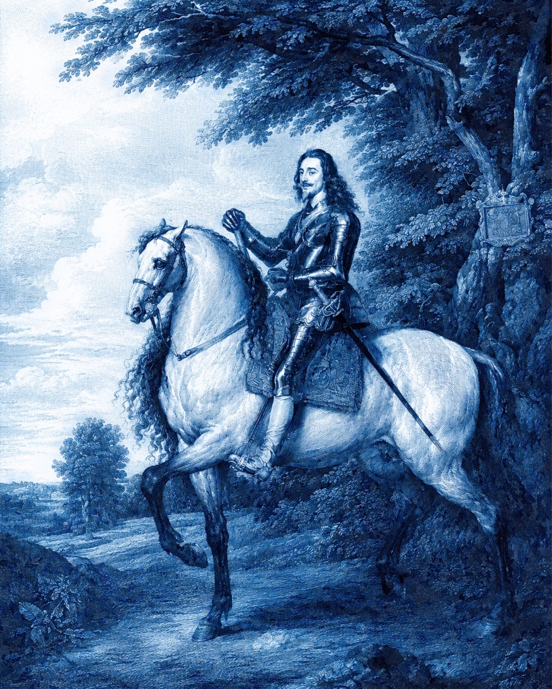

Charleston · South Carolina
Charleston Polo Club
“Let others play at other things The King of Games is still the Game of Kings”
Membership · Instruction · Patronage
Enter the King of Games
Charleston Polo welcomes founding patrons, landholders, and potential partners interested in restoring a lasting polo tradition in the Lowcountry.
The Development Circuit
Cowboy Polo
Discover the American development circuit where new riders learn, horses are made, and the next generation enters the game.
Visit Cowboy Polo